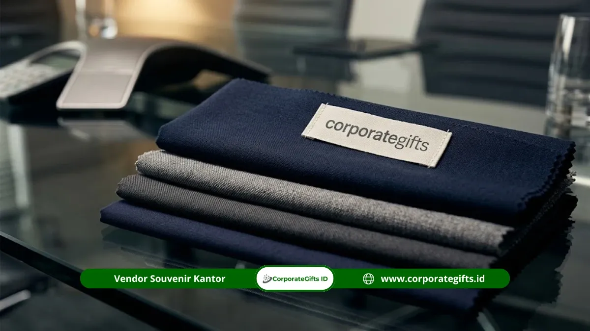

Corporate Gifts ID - Menentukan budget ideal souvenir custom apparel perusahaan bukanlah proses dengan satu nominal kaku, melainkan kalkulasi yang sangat dipengaruhi oleh empat variabel inti: spesifikasi jenis bahan kain, teknik branding yang diaplikasikan, total volume pesanan (skala kuantitas), serta tingkat kerumitan posisi grafis logo. Sebagai tolok ukur umum di industri B2B, biaya per unit pakaian custom dapat dimulai dari puluhan ribu rupiah untuk t-shirt katun sablon dalam skala massal, hingga ratusan ribu rupiah untuk jaket bomber eksekutif atau polo shirt rajut premium berhiaskan bordir komputer dual-logo.
Data riset Promotional Products Association International (PPAI) menunjukkan tren belanja apparel branding korporat terus bertumbuh secara stabil hingga 1,9 persen setiap tahunnya. Hal ini membuktikan bahwa pakaian seragam, kaos event, dan jaket kantor tetap menjadi instrumen promosi berjalan (walking billboard) yang paling digemari. Semakin jelas rincian spesifikasi dan proyeksi jumlah penerima yang dirumuskan tim pengadaan sejak awal, semakin akurat dan efisien alokasi anggaran yang dapat disetujui manajemen keuangan perusahaan.
Poin Kunci: Faktor Pembentuk Anggaran Apparel Perusahaan
- Variabel Material: Tingkatan kain katun combed 24s/30s, lacoste pique katun, hingga taslan waterproof membentuk porsi terbesar biaya pokok produksi.
- Metode Kustomisasi: Bordir komputer presisi memberikan daya tahan maksimal untuk logo kecil, sementara sablon DTF sangat kompetitif untuk gambar ilustrasi besar.
- Pengaruh Skala Kuantitas (MOQ): Struktur harga bertingkat memungkinkan penurunan biaya unit yang drastis ketika melewati ambang pemesanan 100-500 pcs.
- Harmonisasi Segmentasi: Mengalokasikan t-shirt ekonomis untuk acara massal dan jaket premium untuk perwakilan eksekutif menjaga total anggaran tetap seimbang.
- Jadwal Konsolidasi Tahunan: Menggabungkan jadwal pengadaan lintas divisi dalam satu batch produksi mampu menghemat anggaran hingga 20-30 persen.
Daftar Isi Artikel
- Faktor Penentu Utama Budget Custom Apparel Perusahaan
- Cara Mengoptimalkan Anggaran Tanpa Menurunkan Kualitas
- Pengaruh Volume Kuantitas terhadap Harga Pokok Per Unit
- Simulasi Estimasi Biaya Berdasarkan Kategori Apparel Kantor
- Menyusun Anggaran Pengadaan Apparel Jangka Panjang
- Pertanyaan Seputar Budget Custom Apparel Perusahaan (FAQ)
1. Faktor Penentu Utama Budget Custom Apparel Perusahaan
Dalam ekosistem produksi garmen B2B, terdapat empat komponen esensial yang secara langsung menentukan nominal penawaran harga dari vendor:
- Karakteristik dan Gramasi Bahan Kain: Pemilihan antara katun carded standar, katun combed premium 100 persen, lacoste CVC pique, hingga kain teknis anti-air (taslan militer) menciptakan variasi harga yang signifikan. Kain dengan sirkulasi udara baik dan sertifikasi warna tahan cuci memerlukan biaya bahan baku yang lebih tinggi.
- Teknik Aplikasi Branding Logo: Bordir komputer dengan kerapatan benang tinggi sangat ideal untuk seragam resmi kantor, sedangkan sablon DTF (Direct to Film) memberikan hasil cetak warna gradasi tajam dengan efisiensi biaya setup yang lebih terjangkau.
- Titik Penempatan Desain: Menempatkan logo di dada kiri, lengan kanan, dan punggung atas memerlukan tiga kali proses mesin, sehingga biaya operasional pengerjaan bertambah dibanding penempatan logo di satu sisi saja.
- Aksesori dan Detail Penjahitan: Penggunaan kancing berukir logo, label tenun woven leher khusus, dan rib kerah rajut bermotif garis menambah sentuhan mewah dengan sedikit penyesuaian biaya.
2. Cara Mengoptimalkan Anggaran Tanpa Menurunkan Kualitas
Memangkas pengeluaran bukan berarti harus menurunkan standar kain menjadi tipis dan panas. Pendekatan cerdas dapat dilakukan dengan membagi strategi desain secara fungsional. Salah satu metode yang paling populer di kalangan korporasi adalah hybrid branding:
Terapkan bordir komputer berukuran ringkas (panjang 6-8 cm) di dada kiri untuk identitas brand formal yang prestisius, lalu gunakan sablon sablon DTF atau plastisol untuk grafis event berukuran besar di bagian punggung. Dengan begitu, Anda mendapatkan kemewahan visual pada titik pandang utama tanpa harus membayar biaya bordir blok raksasa yang mahal dan kaku saat dipakai.
Selain itu, padukan kebutuhan cenderamata dalam satu kategori pemesanan. Sebagai contoh, kebutuhan kaos onboarding staf baru untuk 6 bulan ke depan dapat disatukan dengan pemesanan kaos seragam family gathering, sehingga total volume kumulatif memenuhi batas diskon kuantitas vendor.

Katalog variasi bahan kaos combed, polo shirt rajut pique, dan jaket windbreaker dengan skema anggaran yang dapat disesuaikan kebutuhan korporat.
3. Pengaruh Volume Kuantitas terhadap Harga Pokok Per Unit
Industri produksi pakaian kustom memiliki komponen biaya tetap (fixed cost) berupa pembuatan film cetak, setting jarum mesin bordir komputer, pola potong kain (cutting pattern), dan pengujian sampel fisik (dummy proof). Pada pemesanan volume kecil (misalnya hanya 24 atau 36 pcs), seluruh biaya tetap tersebut dibebankan pada sedikit barang, sehingga harga per potong pakaian melonjak tinggi.
Sebaliknya, ketika kuantitas pesanan dinaikkan menjadi 100, 250, atau 500 pcs ke atas, beban biaya setup terbagi rata menjadi sangat kecil. Efisiensi kain per gelondong rol juga meningkat drastis dengan tingkat sisa bahan (waste fabric) yang minimal. Inilah alasan mendasar mengapa pengadaan custom apparel dalam jumlah besar selalu memberikan tingkat Return on Investment (ROI) branding yang jauh lebih menguntungkan bagi korporasi.
4. Simulasi Estimasi Biaya Berdasarkan Kategori Apparel Kantor
Untuk memberikan rujukan konkret bagi penyusunan Rencana Anggaran Biaya (RAB) divisi procurement atau HR, berikut adalah matriks simulasi estimasi anggaran souvenir custom apparel berdasarkan tingkatan produk:
| Kategori Apparel | Rekomendasi Bahan | Metode Branding | Estimasi Biaya / Unit | Rekomendasi Penggunaan |
|---|---|---|---|---|
| T-Shirt Event Massal | Katun Combed 30s Reaktif | Sablon DTF / Rubber Presisi | Rp45.000 - Rp65.000 | Gathering tahunan, fun walk, event promosi |
| Polo Shirt Kantor | Lacoste Katun CVC 24s Pique | Bordir Komputer Dada & Lengan | Rp75.000 - Rp110.000 | Seragam operasional, pameran expo, casual Friday |
| Kemeja Kerja Formal | American / Japan Drill Katun | Bordir Presisi + Puring Dingin | Rp95.000 - Rp145.000 | Seragam dinas, kunjungan industri, sales team |
| Jaket Windbreaker / Bomber | Taslan Waterproof / Parasut Korea | Bordir Logo + Puller Zipper Kustom | Rp135.000 - Rp195.000 | Merchandise premium, reward staf, acara outdoor |
| Hoodie / Sweater Eksekutif | Cotton Fleece Gramasi 280-300 | Bordir Timbul (3D Embroidery) | Rp120.000 - Rp180.000 | Welcome kit startup, anniversary pimpinan |
5. Menyusun Anggaran Pengadaan Apparel Jangka Panjang
Perusahaan dengan ratusan staf aktif sebaiknya meninggalkan pola pemesanan darurat yang reaktif (ad-hoc order). Menyusun perencanaan pengadaan tahunan di awal kalender bisnis memberikan beberapa keunggulan strategis:
- Negosiasi Kontrak Payung B2B: Anda dapat mengunci harga bahan baku stabil sepanjang tahun bersama vendor tepercaya, terhindar dari fluktuasi harga tekstil musiman menjelang hari raya.
- Manajemen Ukuran (Size Breakdown) yang Tertib: Pendataan ukuran baju karyawan yang terpusat mencegah kesalahan produksi jumlah ukuran S, M, L, XL, hingga XXL yang sering mengakibatkan pakaian tidak terpakai.
- Jadwal Uji Sampel Fisik Tanpa Tergesa: Memiliki waktu luang minimal 2-3 pekan untuk memeriksa mockup digital dan dummy jahitan fisik memastikan standar jahitan jarum ganda dan warna pantone logo terverifikasi 100 persen sempurna sebelum tahap potong kain massal dimulai.
Pertanyaan Seputar Budget Custom Apparel Perusahaan (FAQ)

Ditulis oleh: Arinda Zakia
Senior Corporate Gifting SpecialistPraktisi pengadaan cenderamata korporat dan konsultan gift set B2B di CorporateGifts.ID dengan spesialisasi pemilihan merchandise fungsional, tata kelola logistik hampers, dan strategi employer branding terpadu.
Lihat Profil Lengkap & Panduan Lainnya